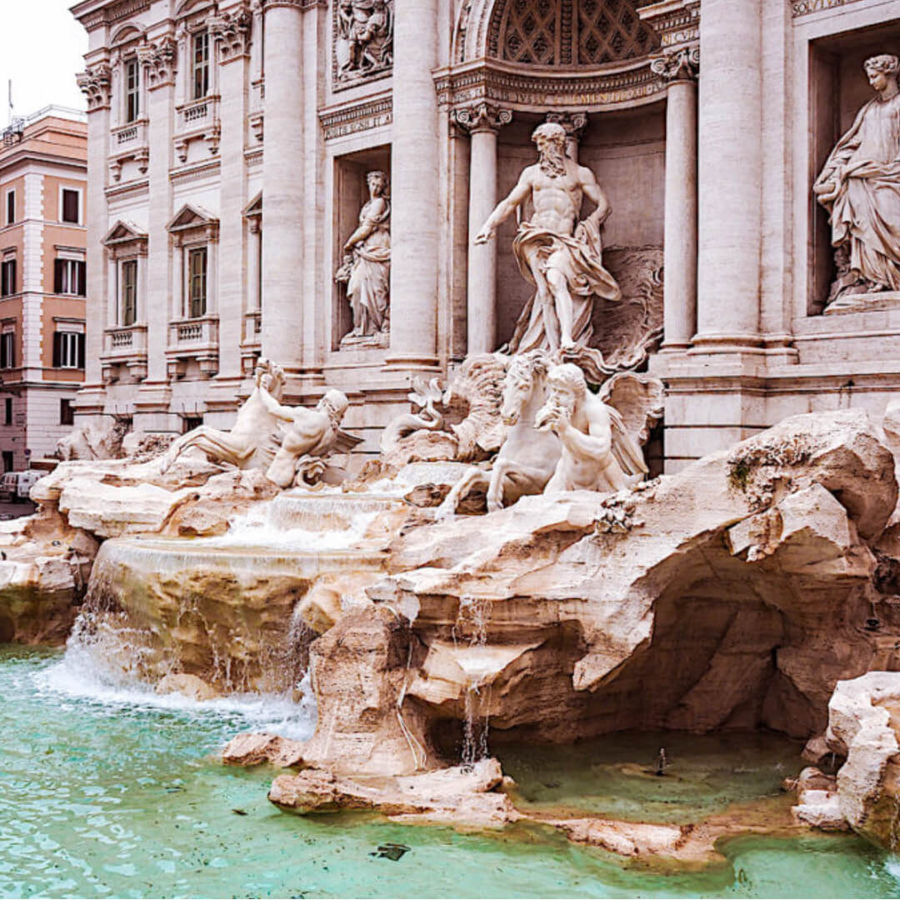

Top 4 de los mejores lugares para visitar este 2021
1.Bali, Indonesia.

“La capital artística de Ubud es el sitio perfecto para ver una actuación de danza típica de la zona, realizar un taller de batik o de platería, o revitalizar la mente y el cuerpo con una clase de yoga”, aseguran en el sitio. Pero lo más recomendado ha sido siempre la playa de Bali, una postal como sacada de un sueño. Arenas blancas, avistaje de especies tropicales y buceo entre arrecifes de coral o los restos del naufragio de un barco de la Segunda Guerra Mundial son las atracciones más comentadas.
2. Londres, Reino Unido.
“La energía de la ciudad significa que dos días no son iguales”, destacan en TripAdvisor. Hay mucho por explorar, desde lugares históricos o de la realeza hasta comer en restaurantes premiados con estrellas Michelin o beber una pinta de cerveza en un pub tradicional. En Londres las posibilidades son infinitas.
3. Dubái, Emiratos Árabes Unidos.
La cultura moderna, la aventura, las compras de lujo y el entretenimiento se concentran en Dubái. Recomendados: el Palacio de la Ópera donde se contempla el centro de la ciudad desde lo alto del Burj Khalifa. También es posible sobrevolar las dunas del desierto en un globo aerostático, montar en una atracción hiperveloz de IMG Worlds of Adventure o tirarte en paracaídas sobre Palm Jumeirah.
4. Roma, Italia.

No alcanza un solo día para conocer Roma. La ciudad parece un collage de plazas, mercados e impresionantes edificios históricos. Las recomendaciones de los viajeros van desde los clásicos Fontana di Trevi, el Coliseo y el Panteón, hasta recargar las pilas con un cappuccino o un plato de pasta fresca, probar los alcauciles fritos y el estofado de rabo de buey.